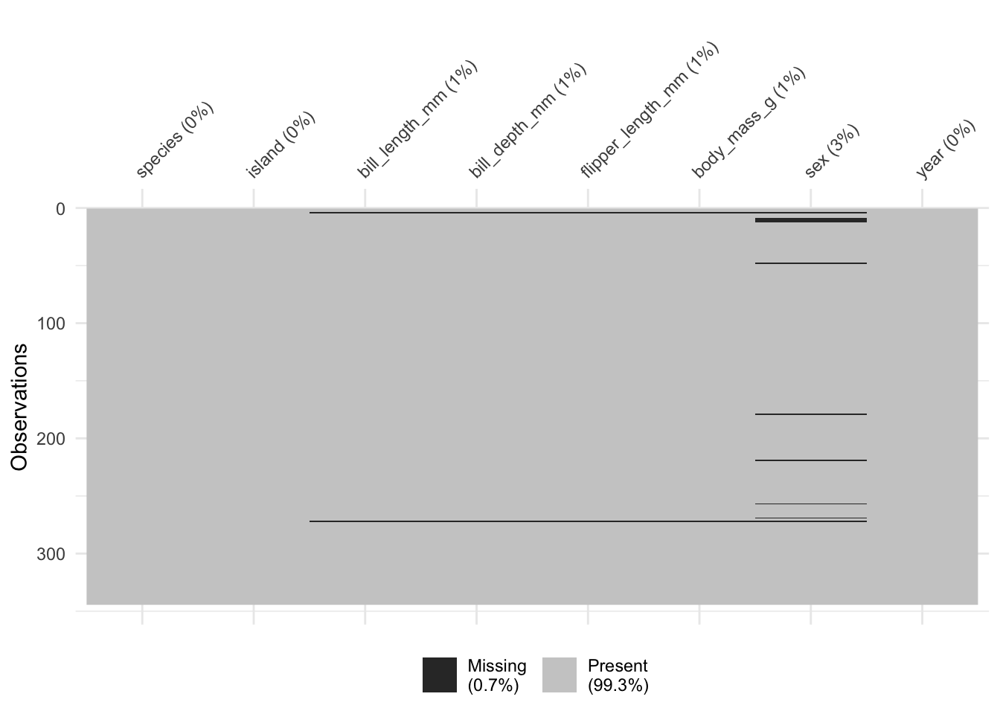
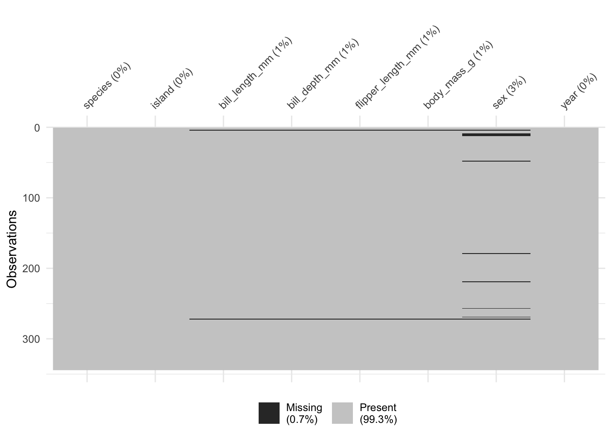
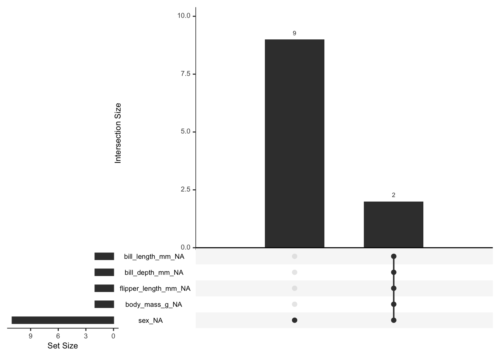
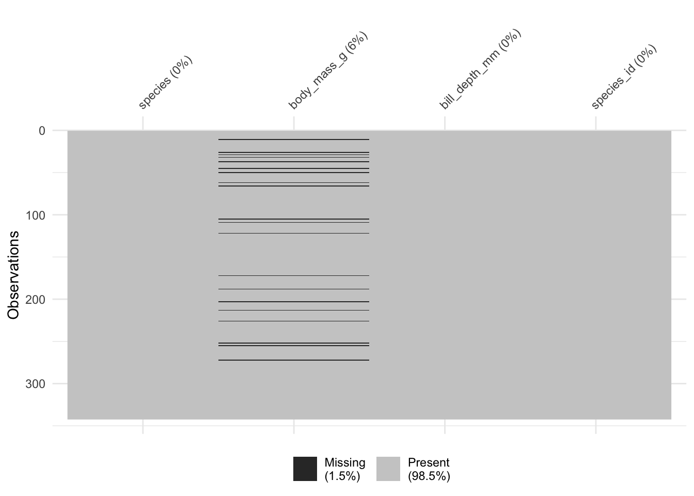
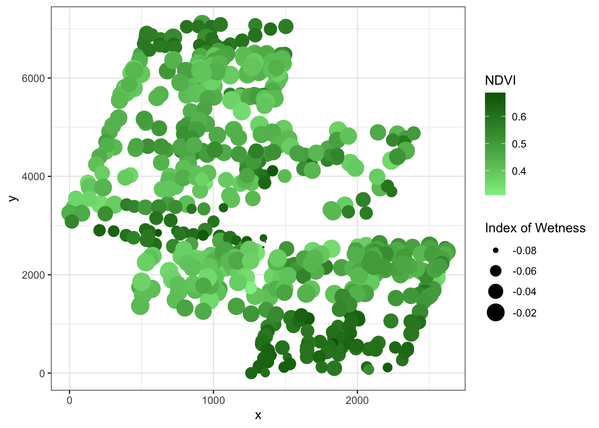
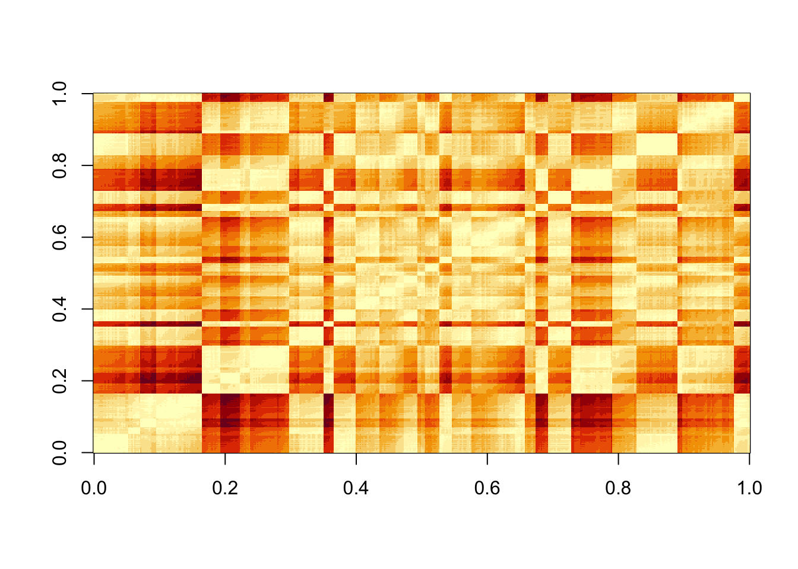
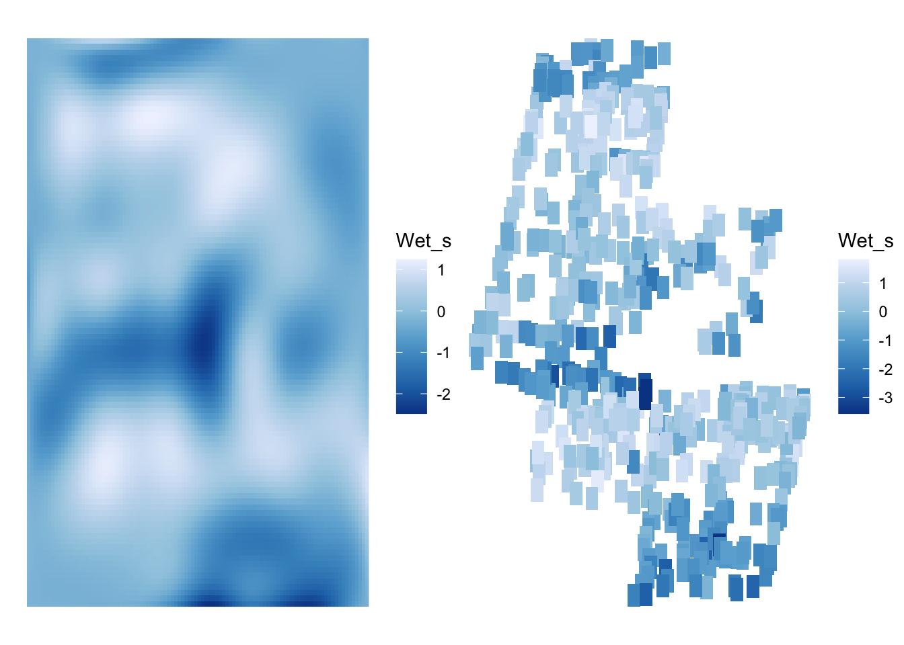
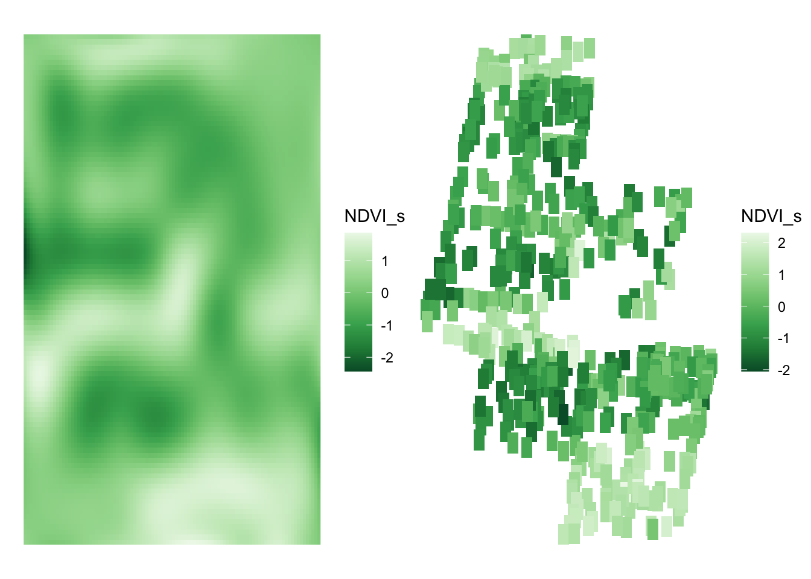
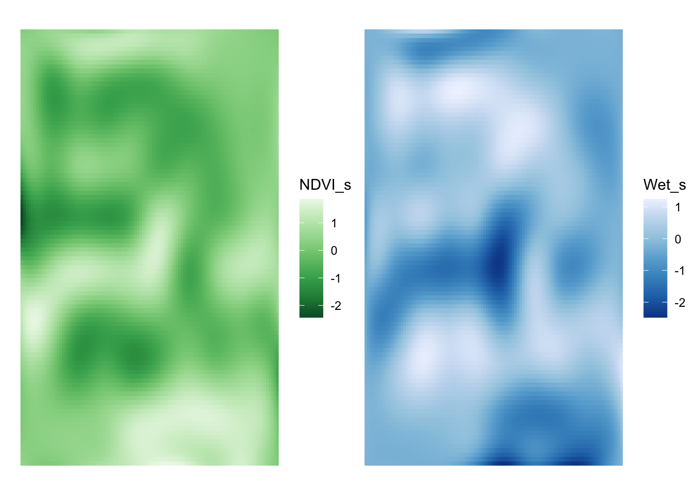

library(dplyr)
library(rethinking)
library(tidybayes)
library(tidybayes.rethinking)
library(ggplot2)
library(patchwork)
library(palmerpenguins)
library(naniar) #for missing data
vis_miss(penguins)
Let’s start with an old favorite. The Palmer Penguins! Shockingly, it does indeed have missing data. Let’s use naniar to explore a bit about the missingness.
library(dplyr)
library(rethinking)
library(tidybayes)
library(tidybayes.rethinking)
library(ggplot2)
library(patchwork)
library(palmerpenguins)
library(naniar) #for missing data
vis_miss(penguins)
Missing data in sex, and a some in measurements of bill length, depth, etc. Let’s look a little more to see if these are often complete cases, or just one variable at a time.
naniar::gg_miss_upset(penguins)
OK, there are two cases of lots of missing values, and 9 of just sex.
Let’s see if missingness is associated with anything. In the test below, from the naniar package, we assume a null hypothesis of MCAR. A large p value means we fail to reject the null hypothesis of MCAR.
naniar::mcar_test(penguins)# A tibble: 1 × 4
statistic df p.value missing.patterns
<dbl> <dbl> <dbl> <int>
1 12.7 10 0.242 3Whew. OK. No deep thinking there!
Let’s assume things were even worse, though. Let’s say we wanted to look at how body mass and species interacted to predict bill depth, and we were missing 15 measurements. Let’s make that data.
set.seed(2024)
penguins_na <- penguins |>
select(species, body_mass_g, bill_depth_mm) |>
filter(!(is.na(bill_depth_mm))) |>
mutate(species_id = as.factor(species) |> as.numeric())
penguins_na$body_mass_g[sample(1:nrow(penguins_na), size = 20)] <- NA
vis_miss(penguins_na)
Let’s fit the model when, modeling body mass as a normal distribution. We’ll standardize first to make life easier.
p <- with(penguins_na,
list(bill_depth_mm = standardize(bill_depth_mm),
body_mass_g = standardize(body_mass_g),
species = species,
species_id = species_id,
is_imputed = is.na(body_mass_g),
N = nrow(penguins_na)))
# model
depth_mod <- alist(
# Likelihood
bill_depth_mm ~ dnorm(mu, sigma),
# DGP
mu <- a[species_id] + b[species_id] * body_mass_g,
# Missing data
body_mass_g ~ dnorm(nu, sigma_mass),
# define body_mass_g_merge as mix of observed and imputed values
# body_mass_g_merge <-
# merge_missing( body_mass_g , body_mass_g_impute ),
# Priors
a[species_id] ~ dnorm(0,2),
b[species_id] ~ dnorm(0,2),
nu ~ dnorm(0, 2),
sigma_mass ~ dhalfnorm(0, 2),
sigma ~ dhalfnorm(0, 2)
) |> ulam(data = p, chains = 3, log_lik = TRUE)Great it worked!
One thing we might worry about, though, is the body masses themselves NOT coming from a normal distribution, but rather from a normal that differs by species. Fortunately, that’s just an index. We can write a similar model that allows nu to vary by species.
depth_mod_sp <- alist(
# Likelihood
bill_depth_mm ~ dnorm(mu, sigma),
# DGP
mu <- a[species_id] + b[species_id] * body_mass_g,
# Missing data
body_mass_g ~ dnorm(nu[species_id], sigma_mass),
# Priors
a[species_id] ~ dnorm(0,2),
b[species_id] ~ dnorm(0,2),
nu[species_id] ~ dnorm(0, 2),
sigma_mass ~ dhalfnorm(0, 2),
sigma ~ dhalfnorm(0, 2)
) |> ulam(data = p, chains = 3, log_lik = TRUE)Is one better than the other?
compare(depth_mod_sp, depth_mod) WAIC SE dWAIC dSE pWAIC weight
depth_mod_sp 425.2749 27.32643 0.00000 NA 10.94201 0.994150488
depth_mod 435.5459 27.17503 10.27106 3.205515 14.53277 0.005849512So, adding species does make it more predictive.
OK, the beauty of the above is that we can use the same framwork for space, time, and Gaussian processes. Let’s look at some data about boreal forests and try and interpolate across space.
boreal <- read.table("http://biol609.github.io/lectures/data/06/Boreality.txt", header=T)
ggplot(boreal,
aes(x = x, y = y, color = NDVI, size = Wet )) +
geom_point() +
theme_bw() +
scale_size_continuous("Index of Wetness", range=c(0,7)) +
scale_color_gradient("NDVI", low="lightgreen", high="darkgreen")
We can fit a gaussian process model for this data by creating a distance matrix with coordinates and assuming a gaussian process. First, the matrix.
#make a distance matrix on the km scale
dmat <- with(boreal,
dist(cbind(x, y))) |> as.matrix()/1e3
image(dmat)
# standardize your data
boreal <- boreal |>
mutate(NDVI_s = standardize(NDVI),
Wet_s = standardize(Wet))Now, let’s model NDVI as a function of wetness given the distances between points. I’m not going to run this, as it takes a looooong time. But, I wanted to present it so we can see the next step.
ndvi_mod <- alist(
# likelihood
NDVI_s ~ dnorm(mu, sigma),
# Data Generating Process
mu <- k[point_id] + bp*Wet_s,
# Gaussian Process
vector[N]:k ~ multi_normal( 0 , SIGMA ),
matrix[N,N]:SIGMA <- cov_GPL2( dmat , etasq , rhosq , 0.01 ),
# Priors
bp ~ dnorm(0,1),
sigma ~ dhalfnorm(0,2),
etasq ~ dhalfnorm(0,2),
rhosq ~ dexp(2)
)
ndvi_fit <- ulam(ndvi_mod,
data = list(Wet_s = boreal$Wet_s,
NDVI_s = boreal$NDVI_s,
dmat = dmat,
point_id = 1:nrow(boreal),
N = nrow(boreal)),
start = list(k = rep(0, nrow(boreal))),
chains = 3)So, what would we want to do next if we wanted to make new predictions? We have a few options. In the past we would have fed a new data frame to the model. We could do that here, but, we would have to write a lot of ancillary code to take a distance matrix and set of predictors and turn it into something useful. See here for an example.
OR - we could look at this as a data imputation problem. The model we have above takes a distance matrix for each point and a level of Wet_s for each point and an observed NDVI_s for each point. This is a dataset looking at trees. Let’s assume there are 30 trees in the upper right hand of the image for which for whatever reason our satellite didn’t pickup NDVI - maybe it’s too much image noise. But we have their coordinates and a measurement of wetness. We can build them in as missing data and impute them. We have even already specified a distribution for NDVI_s as our likelihood.
What do we need, then? Well, we need points, Wet_s values, and a new distance matrix with the new points in it.
Let’s start by adding data.
boreal_new <- boreal |>
select(x, y, NDVI_s, Wet_s) |>
bind_rows(tibble(
x = runif(30, 1500, 2000),
y = runif(30, 5000, 7000),
Wet_s = rnorm(30, 0, 1)
))From this, we can make a new distance matrix.
dmat_new <- with(boreal_new,
dist(cbind(x, y))) |> as.matrix()/1e3At which point we can run our model again - but now with this new missing data.
ndvi_fit <- ulam(ndvi_mod,
data = list(Wet_s = boreal_new$Wet_s,
NDVI_s = boreal_new$NDVI_s,
dmat = dmat_new,
point_id = 1:nrow(boreal_new),
N = nrow(boreal_new)),
start = list(k = rep(0, nrow(boreal_new))),
chains = 3)And that’s it!
As we discussed in class, we can also fit GP models with splines. This enables us to lighten the computational load - something that is crucial when doing spatial interpolation, aka Kriging. What if, instead of a few trees, we assumed that while we had the top of the canopy, we wanted to get NDVI for the entire landscape - including all of the missing space. We can start by fitting the same model as above - only now using bsplines.
The difficulty with splines and space is that we have 2 coordinates instead of one. What do we give to the basis function? In this case, we can still create a basis function for x and y. But, we can consider each point as if it were an interaction of basis functions. With splines, we’d create what is called a tensor product of the two basis functions - a product across our two matrices. In the case of a spline tensor product, we want to do this for each row of each basis function using the function kroenecker().
But, we’ll get there in a second. Let’s start by setting up a basis function for x and y using a B-spline. We’ll make it 3rd order, but only use 10 knots. As you will see, with the tensor product, we’re going to have a lot of parameters to estimate.
library(splines2)
num_knots <- 10
x_knots <- seq(min(boreal$x), max(boreal$x), length.out = num_knots)
y_knots <- seq(min(boreal$y), max(boreal$y), length.out = num_knots)
x_bs <- bsp(boreal$x,
knots = x_knots[-c(1,num_knots)],
degree = 3, intercept = TRUE)
y_bs <- bsp(boreal$y,
knots = y_knots[-c(1,num_knots)],
degree = 3, intercept = TRUE)Now that we have these basis functions, we need to, for each row of our data, calculate the tensor product with kronecker(). Basically, we loop over both matrices and get the tensor product. At the end, sapply produces a matrix that is oriented wrong, so we’ll transpose it back.
xy_bs <- sapply(1:nrow(x_bs), function(i) kronecker(x_bs[i,], y_bs[i,])) |> t()How much information is that? Let’s look at the size of the basis function for just x versus this spatial interaction basis function.
dim(x_bs)[1] 533 12dim(xy_bs)[1] 533 144Wow - so, we’ve fone from 12 to 144 predictors. This is why we’re only using 10 knots at the moment!
With this in hand, though, we can make a standardized data set for ease of fitting:
dat <- list(
NDVI_s = boreal$NDVI_s,
Wet_s = boreal$Wet_s,
xy_bs = xy_bs
)And then a model. We’ll include an intercept this time, although we could go without, and use matrix multiplication with our basis function.
boreal_mod <- alist(
# likelihood
NDVI_s ~ dnorm(mu, sigma),
# Data Generating Process
mu <- a + b * Wet_s +
xy_bs %*% w_xy,
# Priors
a ~ dnorm(0,1),
b ~ dnorm(0,2),
w_xy ~ dnorm(0,2),
sigma ~ dexp(2)
)Last, we can fit this with quap(), which is nice. Remember, we do have to specify a starting vector for w_xy so that we have the right size in the model.
boreal_fit <- quap(boreal_mod,
data = dat,
start = list(
w_xy = rep(0, ncol(xy_bs)))
)This is great! Check it with postcheck().
Now, if we want to make predictions across the entire landscape, we’re also going to need to have wetness measurements, too. Let’s assume that Wet_s follows a gaussian process with no predictors - which means we can fit a B-spline model using the same basis functions as above for Wet_s as a response variable.
# Wetness Mod
wet_mod <- alist(
# likelihood
Wet_s ~ dnorm(mu, sigma),
# Data Generating Process
mu <- a +
xy_bs %*% w_xy,
# Priors
a ~ dnorm(0,1),
c(w_xy) ~ dnorm(0,2),
sigma ~ dexp(2)
)
wet_fit <- quap(wet_mod,
data = dat,
start = list(
w_xy = rep(0, ncol(xy_bs)))
)With this in hand, we’re ready to do some kriging!
To use our model, we need to first get Wet_s values. As we are looking at an entire landscape we can apply our basis function to an evenly spaced grid of x and y values. to not break out computers, let’s make a grid consisting of 100 x and 100 y values. We’ll use tidyr::crossing() to make the grid using the range of data we observe.
# A new dataset
range(boreal$x)[1] 1.91 2619.92range(boreal$y)[1] 0.13 7098.19newgrid <- tidyr::crossing(x = seq(0, 2700, length.out = 100),
y = seq(0, 7000, length.out = 100))That’s 10,000 rows of data. We’re definitely in the territory of this lab of having to start to think about not overloading memory, etc.
One we have these x and y values, we can now apply them to our same basis functions as before.
x_bs_new <- bsp(newgrid$x,
knots = x_knots[-c(1,num_knots)],
degree = 3, intercept = TRUE)
y_bs_new <- bsp(newgrid$y,
knots = y_knots[-c(1,num_knots)],
degree = 3, intercept = TRUE)
xy_bs_new <- sapply(1:nrow(x_bs_new),
function(i) kronecker(x_bs_new[i,], y_bs_new[i,])) |> t()If you want, check out how big these objects are.
Last, and this is the easy part, we can just use our xy_bs_new with our fit model to get landscape-level predictions. We’ll only take 1,000 draws so we don’t break things.
# What's the distribution of Wet_s look like relative to what we have observed?
wet_pred <- linpred_draws(wet_fit,
list(xy_bs = xy_bs_new,
x = newgrid$x,
y = newgrid$y), ndraws = 1000) |>
group_by(x,y) |>
summarize(Wet_s = mean(.value))`summarise()` has grouped output by 'x'. You can override using the `.groups`
argument.To see how we did, let’s plot the landscape, and compare it to the observed data for Wet_s.
wet_1 <- ggplot(wet_pred,
aes(x=x, y=y, fill = Wet_s)) +
geom_raster() +
scale_fill_distiller()+
theme_void()
wet_2 <- ggplot(boreal,
aes(x=x, y=y, fill = Wet_s)) +
geom_tile(width = 100, height = 300) +
scale_fill_distiller() +
theme_void()
wet_1 + wet_2 
Looks good!
So, now that we have a landscape for Wet_s, how do we apply that to our NDVI model? Simple! We use the data frame wet_pred with it’s coordinates and predictor alongside our new basis function. It’a sll just predictions. If we wanted, we could also aggregate and get HPDIs and such for predictions in order di display uncertainty. At the moment, let’s just concentrate on the fitted prediction values and then see how they compare to the actual data.
boreal_pred <- linpred_draws(boreal_fit,
ndraws = 100,
list(x = wet_pred$x,
y = wet_pred$y,
Wet_s = wet_pred$Wet_s,
xy_bs = xy_bs_new)) |>
group_by(x, y, Wet_s) |>
summarize(NDVI_s = mean(.value))`summarise()` has grouped output by 'x', 'y'. You can override using the
`.groups` argument.ndvi_1 <- ggplot(boreal_pred,
aes(x=x, y=y, fill = NDVI_s)) +
geom_raster() +
scale_fill_distiller(palette = "Greens")+
theme_void()
ndvi_2 <- ggplot(boreal,
aes(x=x, y=y, fill = NDVI_s)) +
geom_tile(width = 100, height = 300) +
scale_fill_distiller(palette = "Greens") +
theme_void()
ndvi_1 + ndvi_2 
Fantastic. As a last step, let’s compare the NDVI patterns to patterns in our Wetness index.
ndvi_1 + wet_1 
Huh - they look fairly similar. Did adding space really add anything?
To test this, we can refit our NDVI model without spatial information and compare the spatial and nonspatial model.
boreal_mod_nospace <- alist(
# likelihood
NDVI_s ~ dnorm(mu, sigma),
# Data Generating Process
mu <- a + b * Wet_s,
# Priors
a ~ dnorm(0,1),
b ~ dnorm(0,2),
sigma ~ dexp(2)
)
boreal_fit_nospace <- quap(boreal_mod_nospace,
data = dat)
compare(boreal_fit_nospace, boreal_fit) WAIC SE dWAIC dSE pWAIC weight
boreal_fit 690.3657 60.58190 0.0000 NA 80.951162 1.000000e+00
boreal_fit_nospace 954.9469 53.80924 264.5812 42.79626 4.793682 3.523115e-58Now, it’s clear the spatial model is better for prediction. But, AIC-like indices can tend to select more parameter-rich models, It might be worthwhile to have a think about what is going on here, and how much spatial information was needed to improve fit this much - or if your goal really is just prediction, to just go with it.